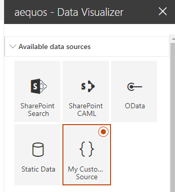

Create a custom data source¶
A complete example is available in the aequos GitHub repository.
To create a custom data source, follow this procedure:
-
Create a custom data source by creating a new class inheriting from the
BaseDataSourceabstract class. Also create an interface for your data source properties. You must create an interface even if empty. The data source properties are persisted in the Web Part property bag.Because the Web Part exposes only a subset of the property bag, you must prefix your property pane fields by the
dataSourcePropertiesproperty to get it work (ex:PropertyPaneTextField(dataSourceProperties.myProperty', {...})import { BaseDataSource, IDataSourceData } from "@aequos/extensibility"; import { IPropertyPaneGroup } from "@microsoft/sp-property-pane"; import { PropertyPaneTextField } from '@microsoft/sp-webpart-base'; export interface ICustomDataSourceProperties { myProperty: string; } export class CustomDataSource extends BaseDataSource<ICustomDataSourceProperties> { public async getData(): Promise<IDataSourceData> { /* Your logic to get the data */ } public getPropertyPaneGroupsConfiguration(): IPropertyPaneGroup[] { return [ { groupName: "Custom", groupFields: [ /* Your property pane fields if needed (not mandatory) */ PropertyPaneTextField('dataSourceProperties.myProperty', { label: "My custom property" }) ] } ]; } } -
In the main entry point class (ex:
MyCompanyLibraryLibrary.ts), extends theIExtensibilityLibraryinterface from the@aequos/extensibilitymodule and register your custom data source this way:import { ServiceKey } from "@microsoft/sp-core-library"; import { IDataSourceDefinition, IDataSource, IExtensibilityLibrary } from "@aequos/extensibility"; import { CustomDataSource } from "../CustomDataSource"; export class MyCompanyLibraryLibrary implements IExtensibilityLibrary { public getCustomDataSources(): IDataSourceDefinition[] { return [ { name: 'My Custom Source', iconName: 'Code', key: 'CustomDataSource', serviceKey: ServiceKey.create<IDataSource>('CustomDataSource', CustomDataSource) }, ]; } }The
serviceKeyproperty is used to create an instance of your data source dynamically. -
Bundle
gulp bundle --shipand package your librarygulp package-solution --shipand upload it either in the global or a site app catalog.
IMAGE_HERE
- Your custom data source will appear automatically in the Data Visualizer Web Part with associated property pane fields if specified:

Debug your data source¶
You can debug you data source like any regular SPFx solution:
- Bundle your solution to run locally using
gulp bundle. - Package your solution without the
--shipoption usinggulp pacakge-solution - Updload it to your site or global app catalog.
- Run the
gulp serve --nobrowsercommand. - Run the 'Hosted workbench' configuration in Visual Studio code and add the 'aequos - Modern data visualizer' Web Part.
Use paging¶
If your data source supports paging (for instance with $top and $skip tokens for OData REST APIs), you can benefit from the builtin template control to browse pages. By default, paging is turn to 'None'.
<aequos-pagination
total-items="{{@root.data.totalItemsCount}}"
items-count-per-page="{{@root.properties.paging.itemsCountPerPage}}"
current-page-number="{{@root.paging.currentPageNumber}}">
</aequos-pagination>
The paging control needs at least the following information to get it work:
- Total items: the total items count returned by your data source query regardless the paging. Sometimes, this information is returned in a @data.count property in OData response. For instance, with SharePoint search, we use the TotalRows property. Coupled with Items count per page, this used to determine the number of pages to display in the control. You can provide this information by implementing the getTotalCount() method from the IDataSource interface.
- Items count per page: the number of items to display per page. If you don't use paging, this corresponds simply to the number of items to retrieve (i.e only one page). This value is managed globally via an predefined proeprty pane property you should not use another Handlebars variable.
- Current page number: the current selected page from the control. This value is managed globally in builtin paging feature and you should not use another Handlebars variable.
The paging types are as follow. To specifiy the paging type your data source support, implement the getPagingType() method from the IDataSource interface.
- PagingType.Static: with this option, the paging is done statically on the existing the data source items collection from the IDataSourceData interface.
- PagingType.Dynamic: if you choose this option, the data source is responsible to fetch the correct data according to the current page and the number of items per page specified in settings. To achieve this, you must use we these two information from the dataContext property passed to the getData() method:
public async getData(dataContext: DataContext): Promise<IDataSourceData> {
// Fetch data for this page
}
The page number is literally the number of the page selected in the template control. It means the initial and minimum value for a page is
1. It is your responsability to process this value and calculate your start row accordingly (i.econst startRow = pageNumber * itemsCountPerPage;).Remember, for each paging type, you must implement the
getItemCount()method in order to calculate the number of pages automatically. For static paging it could simply be the length of theitemscollection.
Data source lifecycle methods¶
The base class provides you some lifecycle hooks and method you can use to control the data source behavior:
| Method | Description |
|---|---|
constructor(serviceScope: ServiceScope) |
Use the constructor to initialize your data source class private properties (not property pane properties). If you use the constructor, don't forget to call super(serviceScope) first. |
onInit() |
Called once during the first initialization of the Web Part at page load. Use this method to initializes property pane properties. This method can be asynchronous. |
onPropertyUpdate() |
Fired when a property pane property is updated. This will fire only with default SPFx property pane fields (ex: PropertyPaneTextField, PropertyPaneSlider, etc.). For custom control, you can control the lifecycle using this.render() and this.refresh() provided methods. |
getPropertyPaneGroupsConfiguration() |
Called when the Web Part proeprty pane is loaded to et your data source fields configuration. |
render() |
Use this method to manually trigger a complete render of the Web Part. Triggering this method will also fire the getData() method. |
refresh() |
Use this method to manually refresh the Web Part property pane. This can be useful if you create cascading fields with asynchronous values or use custom property pane fields. |
Use SharePoint Framework service scopes¶
The data source system leverages the SPFx service scopes mechanism. A data source is always isolated in its own scope . Within this scope, you can consume both default SharePoint Framework services and custom provided ones.
Use default SPFx services¶
If you need to get a reference to SPHttpClient, MSGraphClient, etc. services to perform HTTP calls in your code. The base BaseDataSource class provides a serviceScope property you can use to consume shared services (SPFx or aequos). Add the following code pattern in the data source class in the onInit() method (not in the constructor).
import { SPHttpClient } from "@microsoft/sp-http";
...
export class CustomDataSource extends BaseDataSource<ICustomDataSourceProperties> {
private spHttpClient: SPHttpClient;
public onInit() {
// Use the already initialized 'serviceScope' property from the base class
// Wait until the data source scope is finished. Calling 'consume' before won't work.
this.serviceScope.whenFinished(() => {
// Get an instance of the SPHttpClient class from the top root scope
this.spHttpClient = serviceScope.consume<SPHttpClient>(SPHttpClient.serviceKey);
});
}
public async getData(): Promise<IDataSourceData> {
// Do something with this.spHttpClient
}
...
Here are some useful SPFx services you can use in your data source:
| Service | Description |
|---|---|
SPHttpClient |
Useful to make calls to the SharePoint REST API. |
HttpClient |
Useful to make calls to a generic REST API. |
MSGraphClientFactory |
Useful to malge calls to the Microsoft Graph REST API. |
PageContext |
Useful to get information about the current execution context like site and web URLs. |
aequos provided services¶
We also provide custom services to help you building your data source. To consume such services, use the serviceKeys property provided by the base class to get service keys:
-
TokenService: be able to use tokens within your property fields.serviceScope.whenFinished(() => { this.tokenService = serviceScope.consume<ITokenService>(this.serviceKeys.TokenService); ... });Once instancied, resolve tokens using the
resolveTokens()method:this.tokenService.resolveTokens(<your_string_property>);
See Tokens to get the list of all supported tokens.